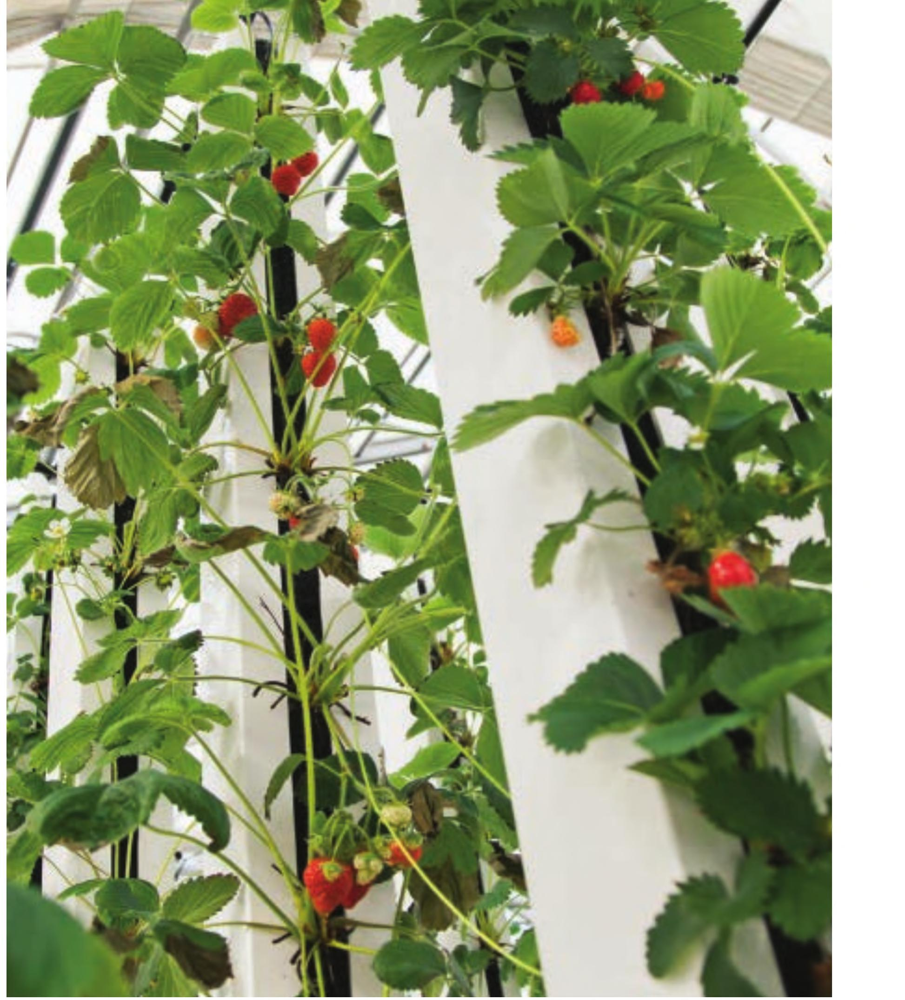
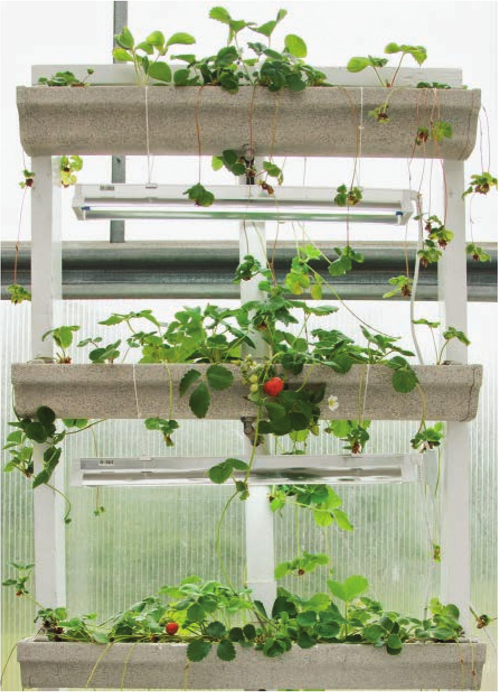

STRAWBERRIES Note: It is very important to keep the crown of a strawberry above the surface of the substrate. If the crown gets too wet, the plant will not and die. • Recommended DIY Systems: Strawberries can be grown in all of the systems mentioned in this book except bottle hydroponics. • Germination Temperatures: Strawberries can be started from seed but it is more common to purchase bare-root plants ready to transplant. Ideal germination temperature for seeds is around 70°F. • Water Temperatures: 60-75°F • EC: 0.8-1 .2. Can tolenate higher ECs even up to 2.5. • pH: 5. 5-6.0 • Air Temperatures: 60-80°F Variety Name Notes Delizz Good variety to grow from seed. Jewel Earliglow Good flavor, but mild compared to Evie. Sparkle Evie Very good flavor. Pineberry Requires cross-pollination to develop fruit. Produces a white strawberry with decent flavor. Flavor is supposed to taste like a mix of strawberry and pineapple; 1 only taste strawberry, though. Mara Des Bois Not a very robust variety in hydroponics. Eversweet Seascape A very popular variety for hydroponics, flavor is okay. Sweet Charlie Strong grower, great for hydroponics. Flavor is almost as good as Evie. Various strawberry varieties grown in vertical towers Various strawberry varieties grown in a DIY vertical garden 180 DIY HYDROPONIC GARDENS

